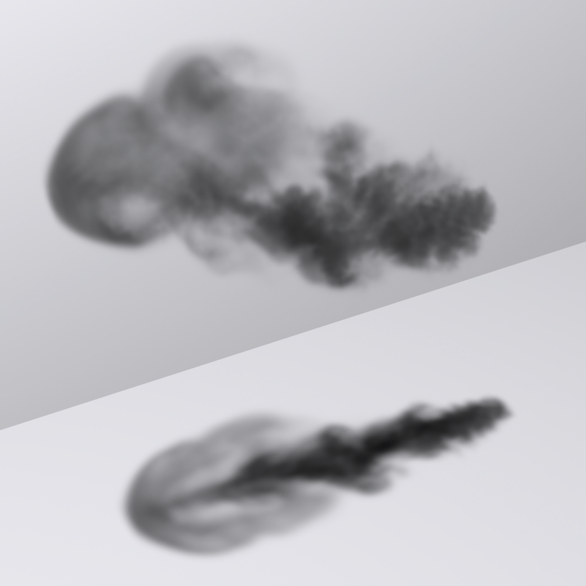
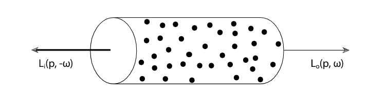
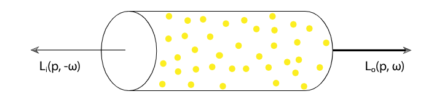
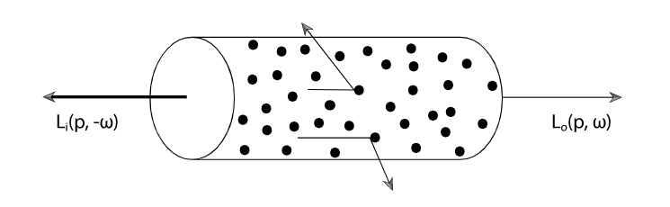
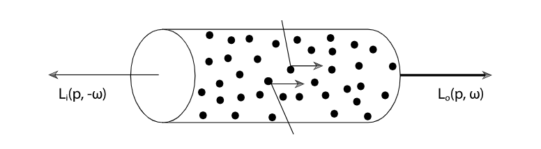

Volume Scattering
参与介质（participating media）是大量极小的粒子分布在一个三维的空间里面，这些粒子会衰减和散射光线。
体积散射（volume scattering）模型基于一个假设：光线在介质中散射是一个概率过程，而不是真的考虑光线与粒子碰撞
通过模拟参与媒体的效果，可以使用大气雾霾、穿过云层的光束、穿过浑浊水域的光以及地下散射来渲染图像
Volume Scattering Processes
在具有参与介质的环境种，影响radiance分布的主要过程有三个：
- 吸收（Absorption）：由于光转化为另一种形式的能量，如热，辐射的减少
- 发射（Emission）：从发光粒子出发，增加到环境中的radiance
- 散射（Scattering）：由于与粒子的碰撞，在一个方向上的radiance被散射到其他方向
这些过程都可以是均匀或者不均匀的。均匀是指，参与介质在空间中的性质是恒定的。不均匀就是变化的
Absorption
想象一下从火中冒出的浓烟（算了不想像了直接拿pbrt的图）

烟雾遮住了后面的物体，因为它的粒子吸收了从物体传播到观察者的光。烟越浓，吸收的光就越多。注意地面上的阴影，它还吸收了光源到地面的光
吸收由介质的吸收截面σa来描述，它是光在介质中每单位距离被吸收的概率密度
一般来说，吸收截面可以随位置p和方向ω而变化
σa的单位是m−1，所以可以取任意正数

假设现在光线正在通过一片极其小的参与介质，它的体积小到只有微分体积，我们想知道光线穿过它后还携带多少radiance
Lo(p,ω)−Li(p,−ω)=dLo(p,ω)=−σa(p,ω)Li(p,−ω)dt
这个微分方程可解，如果我们假设光线从点p开始沿ω方向穿过介质传播距离d，则原始radiance还剩下多少由下式给出
Lo(p,ω)=e−∫0dσa(p+tω,ω)dt
Emission

当光线穿过介质时，吸收会减少光线的radiance，而发射会增加，这是由于化学、热或核过程将能量转化为可见光。

尽管介质仍然吸收光线，在地面上投射阴影，遮蔽了后面的墙，但发光会增加穿过它的光线的辐射，使云比后面的墙更亮。
给出发射引起的radiance变化的微分方程是
dLo(p,ω)=Le(p,ω)dt
这个方程包含了发射光不依赖于入射光的假设
Out-Scattering and Attenuation

当光线穿过介质时，它可能会与粒子碰撞并散射到不同的方向。这会对radiance造成两种影响
一种是减少，很容易理解，光线被粒子偏转到其他方向上去了
每单位距离发生外散射事件的概率由散射系数σs给出。与吸收一样，外散射引起的沿微分长度的radiance减少由下式给出
dLo(p,ω)=−σs(p,ω)Li(p,−ω)dt
由于吸收和外散射导致的辐射总减少由它们的和表示。这种吸收与外散射的组合效应称为衰减（attenuation）或消光（extinction）
σt(p,ω)=σa(p,ω)+σs(p,ω)
消光系数还可以导出反照率（albedo）
ρ=σtσs
反照率的值永远在0到1之间，它描述了在散射事件中散射（相对于吸收）的概率。
第二个是平均自由程（mean free path），它给出了光线在与粒子碰撞前，光线在介质中传播的平均距离。
σt1
给定消光系数σt，总衰减的微分方程是
dtdLo(p,ω)=−σt(p,ω)Li(p,−ω)
它可以求出光线透射率（beam transmittance），该透射率给出两点之间透射的辐射率分数：
Tr(p→p′)=e−∫0dσt(p+tω,ω)dt
其中
透射率永远在0到1之间
因此，如果给定方向ω上，点p的出射辐射由Lo给出，在考虑消光后，方向−ω上另一点p′的入射辐射为
Tr(p→p′)Lo(p,ω)
而且只要给定两个点，它们之间互相计算透射率都完全相等
Tr(p→p′)=Tr(p′→p)
透射率的另一个重要性质是，它是路径上透射率的乘法
Tr(p→p′′)=Tr(p→p′)Tr(p′→p′′)
Tr的指数部分叫做光学厚度（optical thickness），用符号τ
τ(p→p′)=∫0dσt(p+tω,−ω)dt
在均匀介质中，消光系数是个常数，积分可以直接解出来，它被称为 Beer’s law
Tr(p→p′)=e−σtd
In-scattering
上面说了向外散射对radiance的影响。

另一种影响是其他地方散射来的radiance增大了当前的radiance
烟雾看起来比吸收要亮一些
假设粒子间的距离是其半径长度的几倍，那么在描述特定位置的散射时，可以忽略粒子间的相互作用
在这个假设下，相位函数（phase function）描述了一点上散射辐射的角分布。它类似于BSDF，但只是类似
相位函数有一个归一化约束：
∫S2p(ω,ω′)dω′=1
这个约束意味着相位函数实际上定义了在特定方向上散射的概率分布
因散射引起的每单位距离的附加radiance由Ls给出
dLo(p,ω)=Ls(p,ω)dt
同时考虑了体积发射和散射
Ls(p,ω)=Le(p,ω)+σs(p,ω)∫S2p(p,ωi,ω)Li(p,ωi)dωi
它长得和渲染方程非常像，只不过没有cosine项，因为相位函数作用于radiance而不是irradiance
The Equation of Transfer
光线传输方程（light transport equation）实际上是传输方程（equation of transfer）的一个特例，由于缺少参与介质而简化，专门用于表面散射。
回忆一下out scattering，也就是radiance衰减的微分方程，如果把它和in scattering加在一起，就可以得到沿光线到p′点处radiance变化的微分方程
∂t∂Lo(p′,ω)=−σt(p′,ω)Li(p′,−ω)+Ls(p′,ω)
在适当的边界条件下，该方程可以转化为纯积分方程。例如，如果我们假设场景中没有曲面，因此光线永远不会被阻挡，并且具有无限的长读，则传输的积分方程为
Li(p,ω)=∫0∞Tr(p′→p)Ls(p′,−ω)dt
更一般地说，如果场景中存在反射或者发光面，则光线不一定无限长，光线照射到的第一个曲面会影响其辐射
如果光线在p0处撞到了表面，只要把这个影响叠加到方程里就可以了
Li(p,ω)=Tr(p0→p)Lo(p0,−ω)+∫0∞Tr(p′→p)Ls(p′,−ω)dt
这就是传输方程
Generalized Path Space
如何将体积散射传输方程改写成path integral formulation
TODO
Sampling Volume Scattering